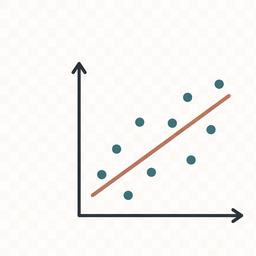
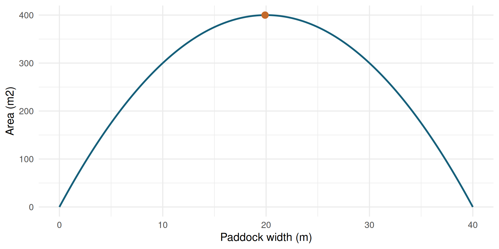

Optimization
Advanced Statistics Lab
Basic Optimization Problem
Objective
Let \(\theta\) be the parameter vector and \(\Theta\) the allowed parameter space.
\[
\widehat{\theta}
\in
\operatorname*{arg\,min}_{\theta \in \Theta}
f(\theta)
\]
For maximization:
\[
\operatorname*{arg\,max}_{\theta \in \Theta} f(\theta)
=
\operatorname*{arg\,min}_{\theta \in \Theta} -f(\theta)
\]
Symbol Map
| \(\theta\) |
Candidate value or parameter vector. |
| \(\Theta\) |
Allowed set of candidate values. |
| \(\widehat{\theta}\) |
Optimizing value, marked with a hat because it has been selected or estimated. |
| \(f(\theta)\) |
Objective function. |
| \(\operatorname*{arg\,min}\) |
Input value that gives the minimum. |
| \(\operatorname*{arg\,max}\) |
Input value that gives the maximum. |
Constrained Problems
Constraints
\[
\begin{aligned}
\widehat{\theta}
&\in
\operatorname*{arg\,min}_{\theta \in \Theta}
f(\theta) \\
\text{subject to } g_j(\theta) &\le 0, \quad j = 1,\dots,m \\
h_k(\theta) &= 0, \quad k = 1,\dots,r
\end{aligned}
\]
Constraints narrow the parameter space.
| \(g_j(\theta)\) |
The \(j\)th inequality constraint. |
| \(h_k(\theta)\) |
The \(k\)th equality constraint. |
| \(m\) |
Number of inequality constraints. |
| \(r\) |
Number of equality constraints. |
The Workflow

Model Objective Search Constraints
- Define the model.
- Define the objective.
- Search for good parameter values.
- Check whether the result makes statistical and biological sense.
First Example: Fence A Paddock
Model
80 meters of fence.
\[
2w + 2\ell = 80
\]
Divide by 2:
\[
w + \ell = 40
\]
So:
\[
\ell(w) = 40 - w
\]
\[
A(w) = w(40 - w)
\]
Area Function
Objective
fence_m <- 80
paddock_area <- function(width, fence_m = 80) {
length <- fence_m / 2 - width
width * length
}
candidate_widths <- seq(0, fence_m / 2, length.out = 200)
area_grid <- data.frame(width = candidate_widths)
area_grid$area <- paddock_area(area_grid$width, fence_m)
best_grid <- area_grid[which.max(area_grid$area), ]
\[
\widehat{w}
=
\operatorname*{arg\,max}_{0 \le w \le 40}
A(w)
\]
Objective Shape
ggplot(area_grid, aes(width, area)) +
geom_line(color = "#155f7a", linewidth = 1.2) +
geom_point(data = best_grid, color = "#c46a2b", size = 4) +
labs(x = "Paddock width (m)", y = "Area (m2)")

Search With optim()
Search
Maximize area by minimizing negative area.
negative_area <- function(width, fence_m = 80) {
-paddock_area(width, fence_m)
}
fit_area <- optim(
par = 10,
fn = negative_area,
fence_m = fence_m,
method = "L-BFGS-B",
lower = 0,
upper = fence_m / 2
)
data.frame(width = fit_area$par, area = -fit_area$value)
Bound Constraints
Constraints
\[
0 \le w \le 40
\]
fit_tight_area <- optim(
par = 10,
fn = negative_area,
fence_m = fence_m,
method = "L-BFGS-B",
lower = 0,
upper = 15
)
data.frame(
problem = c("correct bounds", "too-tight upper bound"),
width = c(fit_area$par, fit_tight_area$par),
area = c(-fit_area$value, -fit_tight_area$value)
)
problem width area
1 correct bounds 20 400
2 too-tight upper bound 15 375
Where This Goes Next
Model
Same workflow, statistical objectives:
| Least squares |
Minimize squared vertical distances. |
| Maximum likelihood |
Maximize probability of the observed data. |
| Animal models |
Balance fit and shrinkage. |
Exercises
- Change the amount of fencing.
- Change the starting value in
optim().
- Make the upper bound too tight.
- Rewrite the objective for a three-sided fence.